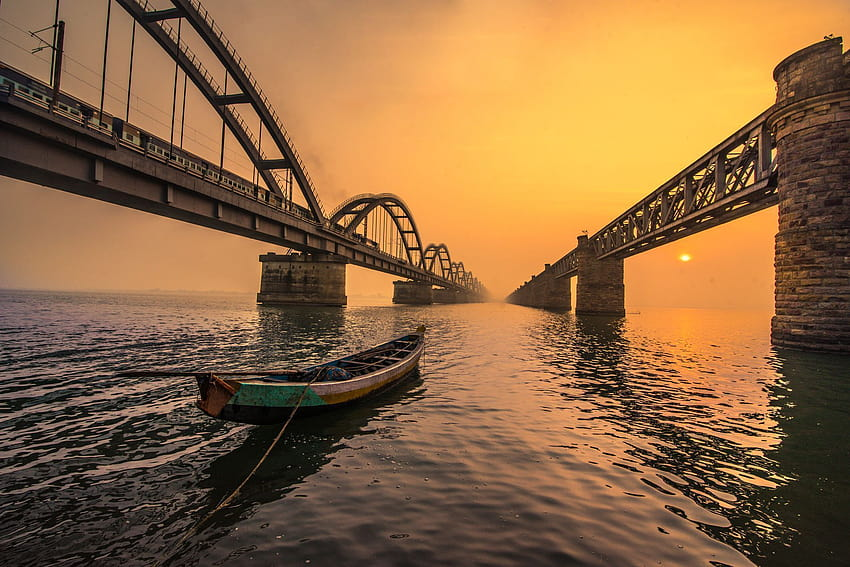
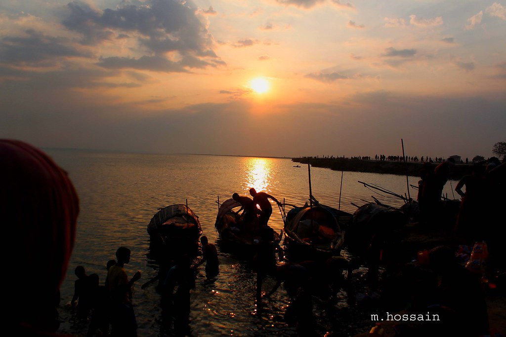
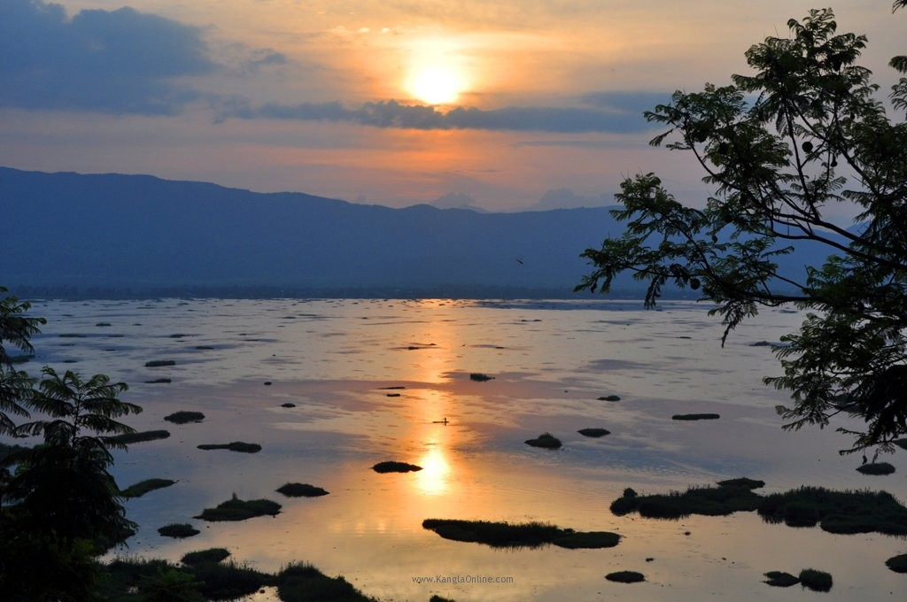
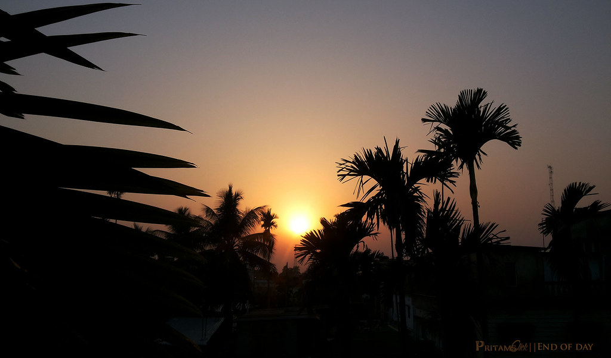

With religious and cultural significance as its identity, Andhra Pradesh is famous for unique rivers, such as Krishna and Gosthani, hills, such as Horsley and Papi, temples, the Kuchipudi dance form and production of Mica.
Read More
Goa
Goa is known for its stunning beaches, unique culture and delicious cuisine. Goa is also known for its vibrant nightlife. Goa is also a popular destination for water sports like water-skiing, parasailing, scuba diving, kayaking and more.
Read More

Jharkhand
Jharkhand is known for its rich cultural heritage, traditional handicrafts. It is also known for its tribal culture and folk music, which have been preserved for centuries. The state is known for its wildlife sanctuaries.
Read More

Manipur
The speciality of Manipur is its rich culture and tradition. It is known for its vibrant culture and the Meitei language. The state is also renowned for its festivals and celebrations, such as the Lai Haraoba and the Yaoshang festival.
Read More
Punjab
unjab is known for its rich, buttery flavours along with the extensive vegetarian and meat dishes. It is known for its hearty and flavourful curries, tandoori dishes, and breads. Popular dishes include makki di roti and sarson da saag.
Read More

Tripura
Tripura is known for its rich cultural heritage.Specialities include its succulent fish dishes, spicy curries, the bhat. Renowned for its traditional handloom weaving and its vibrant classical dance forms.
Read More